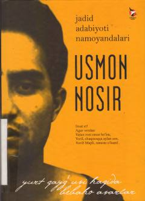

UNTaniqli o'zbek shoiri Usmon Nosirning sara she'rlari, dostonlari va tarjimalari to'plami.
Ushbu kitob o'zbek adabiyotining yorqin namoyandasi, shoir va tarjimon Usmon Nosirning she'rlari, dostonlari hamda tarjimalarini o'z ichiga oladi. Nashrda muallifning hayoti va ijodiy yo'li, shuningdek, uning fojiali taqdiri haqida ham ma'lumotlar berilgan.